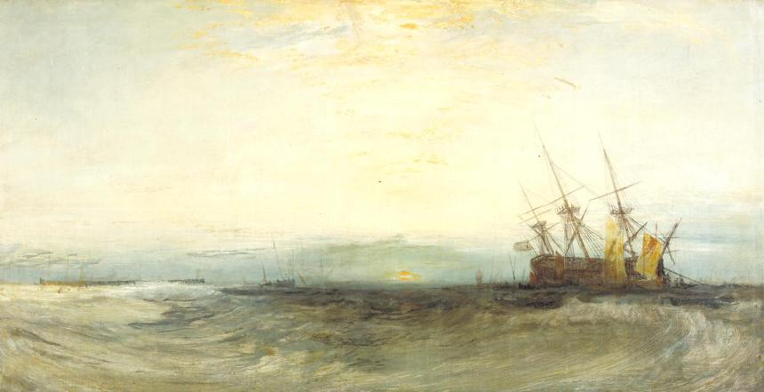
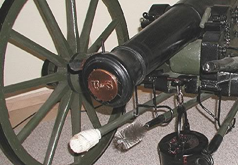

나폴레옹 시대 영국 전함의 전투 광경 - Lieutenant Hornblower 중에서 (4)
게시: 2019-03-07T06:30:00+09:00
"바로 아래에 떨어졌습니다, 부관님." 바로 옆 포구에 서있던 혼블로워가 보고했다. "대포가 뜨거워지면 닿을 것 같습니다." (When the guns are hot they'll reach it. : 아래 PS1. 참조)
"그럼 계속 하게."
"제1 분대, 발포하라 !" 혼블로워가 외쳤다.
맨 앞의 4문의 함포가 거의 동시에 불을 뿜었다.
"제2 분대 !"
부시는 포격의 충격과 그 반동으로 인해 발 아래 갑판이 붕 뜨는 듯한 느낌을 받았다. 좁은 공간으로 매케하고 쓰디쓴 화약 연기가 흘러들어 왔다. 소음으로 감각이 거의 마비될 지경이었다.
"다시 해봐, 제군들 !" 혼블로워가 외쳤다. "분대 조장들은 조준을 똑바로 하게 !" (see that you point true!)
부시 바로 옆에서 우지끈쿵쾅하는 무시무시한 소리가 나더니 무언가가 쓍하고 그를 지나 접합부 근처의 갑판 들보에 박혔다. 열린 포문을 통해 무언가가 날아들어 대포의 포미 부분을 때린 것이었다. 그 옆에 서있던 두 수병이 쓰러졌는데 하나는 죽은 듯 누워있었고 다른 하나는 고통에 몸을 꼬며 괴로워하고 있었다. 부시는 그 부상자들에 대한 처리를 명령하려 했으나, 더 중요한 일이 그의 주의를 끌었다. 그의 머리 근처의 갑판 들보에 방금 전 포탄에 의해 깊이 갈라진 틈이 생겼는데, 그 틈 깊은 곳에서 연기가 피어오르고 있었다. 방금 전 대포의 꼬리 부분을 때린 시뻘겋게 달궈진 가열탄(hot shot)이 쪼개지면서 그 파편들이 튄 모양이었다. 그 중 가장 큼직한 조각 하나가 머리 위 들보에 깊히 박혔고 이미 나무에서 스멀스멀 연기가 피어오르고 있었다.
"소화용 물통을 가져와 !" 부시가 버럭 외쳤다.
전함의 바짝 마른 목재에 깊숙이 박힌 시뻘겋게 달아오른 10파운드짜리 쇳조각은 몇 초 안에 활활 타는 화재를 일으킬 수 있었다. 그와 동시에 머리 위 상갑판에서는 부산히 움직이는 발소리와 장치를 이리저리 움직이는 소리가 나더니 펌프가 철컹철컹 작동하는 소리가 들렸다. 그러니까 상갑판에서도 화재 진압을 하고 있는 것이 틀림없었다. 혼블로워가 담당하는 대포들이 좌현에서 사격을 계속했고, 포가들이 갑판의 목재 위를 반동하여 구르며 우르르 소리를 냈다. 지옥도 같은 상황이 펼쳐졌고, 그의 주변에는 지옥에서 올라오는 듯한 연기가 물결처럼 몰려오기 시작했다.
가로활대들이 회전하면서 돛대들이 또 끼익끼익 소리를 냈다. 이 난리통 속에서도 구불구불한 수로를 따라 전함은 항진을 계속 해야 했던 것이다. 그는 포문을 통해 밖을 내다 보고 침착하게 거리를 짐작해보았으나, 능선 위의 요새는 여전히 사거리 밖에 있는 것으로 보였다. 더 이상 탄약을 낭비하는 것은 의미가 없었다. 그는 몸을 똑바로 세우고 어두컴컴한 갑판 위를 둘러보았다. 그의 발 밑에서 느껴지는 배의 움직임에 무언가 이상한 것이 있었다. 그는 그의 엉뚱한 의심을 시험해보기 위해 발끝으로 까치발을 만들어 서보았다(teetered on his toes). 갑판의 각도가 아주 약간 느껴질 만큼 기운 것 같았고, 거기에는 자연스럽지 않은 경직성과 일시적인 것이 아니라는 느낌이 있었다. 오 이런 젠장 ! 혼블로워가 그를 돌아다보고는 발 밑을 향해 다급한 손짓을 해보이며 그의 이 끔찍한 생각이 사실임을 확인시켜 주었다. 리나운 호가 좌초한 것이었다. 리나운 호가 진흙뻘 위를 워낙 매끄럽고 천천히 항진하다보니 갑작스럽게 속도가 확 줄어드는 느낌없이 진흙뻘 위에 좌초해버린 것이 틀림없었다. 그래도 이 정도로 갑판이 기운 것이 느껴지는 것을 보면 뻘 위로 이물을 꽤 드러낸 채 좌초한 것 같았다. 그러는 중에도 요새들에서 날아온 포탄이 명중하면서 뭔가 박살이 나는 듯한 쿵쾅 소리가 계속 되었고, 그로 인한 화재를 진압하러 뛰어다니는 수병들의 발소리도 새롭게 시작되었다. 리나운 호는 단단히 좌초 되어버린데다, 저 저주받은 요새들로부터의 포격으로 산산조각이 나고 있는 중이었다. 그나마 가열탄들 때문에 발생한 화재로 이 뻘 위에서 산 채로 구워지지 않는다면 말이다. 혼블로워가 손에 시계를 들고 그의 옆으로 왔다.

(A Ship Aground, Yarmouth, by Joseph Mallord William Turner)
---------------
PS1. 현대적 장비를 갖춘 지금도 처음부터 초탄 명중을 시키는 것은 매우 어려운 일입니다. 다만 모든 나폴레옹 시대 역사 소설에서 공통적으로 나오는 표현이, 처음 쏜 대포알은 cold gun에서 나갔기 때문에 사거리가 좀 짧지만, 연이어 쏘면 gun이 hot 해지므로 사거리가 좀 더 길어진다고 합니다. 이건 과학적으로 이해가 잘 안 되는 이야기입니다. 대포는 쏘면 쏠 수록 뜨거워져서 포구경도 약간 넓어지고 포강 내부에 화약 및 캔버스 천의 찌꺼기가 끼기 때문에 사거리나 명중률이 좋아질 이유가 없습니다. 그런데도 cold gun보다 hot gun의 사거리가 더 길어진다고 당시 군인들이 말했던 이유는 아마 이런 것 아닐까 합니다.
당시 육군 포병대나 군함에서나 모두 평상시에 장약과 포탄을 장전한 상태로 대포를 유지했습니다. 이는 당시 전장식(muzzle-loading) 대포의 장전에는 꽤 긴 시간이 걸리기 때문이었습니다. 특히 군함에서는 그렇게 대포를 장전한 상태로 유지하지 않는다면, 처음 발포할 때까지의 시간이 너무 오래 걸렸습니다. 화약은 위험한 물건이고 당시 장교들은 수병들의 수준을 매우 낮게 보았기 때문에 평상시 수병들이 램프를 켜고 생활하는 공간인 포갑판 위에 대포 장약을 노출된 채로 대포 옆에 보관하지 않았습니다. 즉, 대포를 쏘려면 저 아래 선창에 있는 화약고의 자물쇠를 열고 장약을 올려보내야 했기 때문에 최초 발사를 위해서는 시간이 매우 오래 걸릴 수 밖에 없었던 것입니다.
하지만 당시 대포를 그렇게 장탄된 상태로 오래 두는 것에도 단점이 있었습니다. 당시 장약은 황동제 탄피에 밀폐된 것이 아니라 그냥 캔버스 천에 미리 정해진 분량의 흑색화약을 넣어둔 것에 불과했습니다. 따라서 그런 캔버스 천으로 된 장약을 대포 약실 속에 밀어넣어두면, 아무리 포구 마개(tompion)로 포구를 막아둔다고 해도 습기가 찰 수 밖에 없었습니다. 게다가 흑색화약이라는 것은 유황과 목탄, 질산칼륨으로 이루어진 어설픈 혼합물이었습니다. 원래 흑색화약의 폭발력은 목탄의 탄소가 질산칼륨이 제공해주는 산소와 격렬하게 결합하여 이산화탄소를 만들어내는 것에서 발생하는 것이거든요. 유황은 거기서 안정제 역할을 합니다. 그런 흑색화약을 파도에 흔들리는 배 위의 대포 약실 속에 그냥 가만히 놔둔 채 시간이 흐르면 무거운 물질과 가벼운 물질이 점점 분리될 수 밖에 없었습니다. 특히 유황의 밀도는 대략 2g/cm3, 질산칼륨이 2.11g/cm3 정도로 비슷하지만, 목탄은 0.2g/cm3로 상당히 가볍습니다. 그런 혼합물을 장기간에 걸쳐 파도로 흔들어주면 목탄은 대포 약실 위쪽으로, 유황과 질산칼륨은 대포 약실 아래쪽으로 점점 분리되게 됩니다. 그렇게 따로따로 분리된 상태에서 불이 붙으면 100% 제대로 된 폭발이 일어날 수가 없었습니다.
요약하면, cold gun에서 쏘았기 때문에 사거리가 짧다는 표현은 정확한 표현이 아니고, 너무 오래 약실에 묵혀둔 장약으로 쏘았기 떄문에 제대로 된 폭발이 일어나지 않아서 사거리가 짧다는 뜻으로 이해하시면 되겠습니다.

(포구마개는 tampion이라고도 하고 tompion이라고 합니다. 특히 당시 군함에서는 외부의 습기로부터 장약을 보호하기 위해 꼭 필요한 도구였지요.)